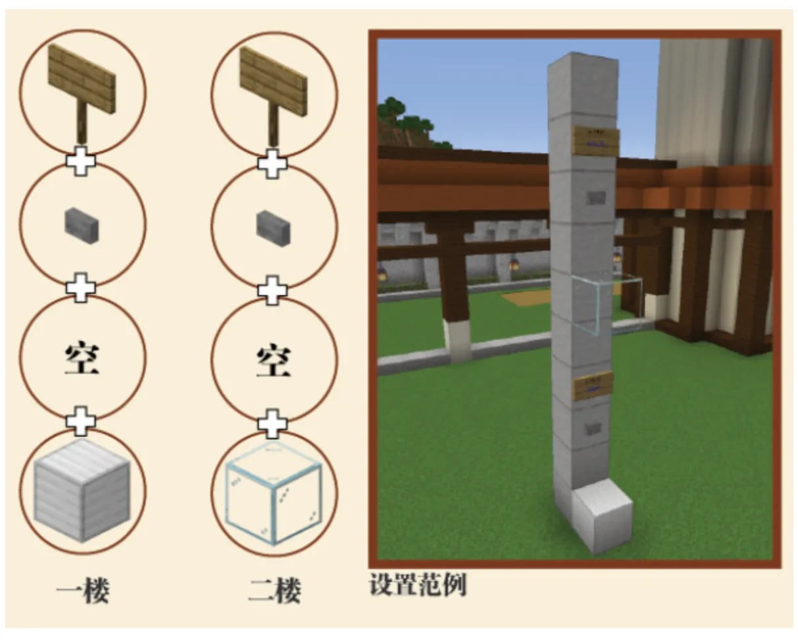

Loading header...
电梯插件
电梯插件能帮你简化建筑里上上下下的事。
按照图示方法安装电梯，右键告示牌后激活电梯。

按照图示方法安装电梯
指令一览
- /lift 似乎没有功能，只会显示一个/lift
功能介绍
主手持物品右键告示牌可以滚动设置目标楼层，主手空置右键告示牌可开启/关闭滚动楼层选择，滚动选择楼层的状态下，可以滚动鼠标滚轮进行楼层切换。
电梯能够传送实体——甚至是掉落物和展示框。
电梯的玻璃可以换成彩色玻璃。
电梯每层可以更大，不局限于示例中一格的状态。这种情况下如果有多个告示牌和按钮的组合，它们共同控制这一个楼板。
如果你正在电梯上而其他人按动的电梯经过你所在的楼层，楼板消失，你会浮空，并且移动缓慢。如果当时你并不在上面而楼板在运行时消失了，那你会掉下去。
一层的铁块换成金块可以让电梯1.5倍速，换成钻石则是2倍速。
目录